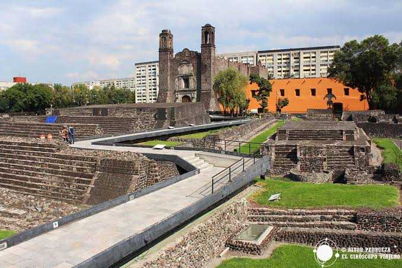
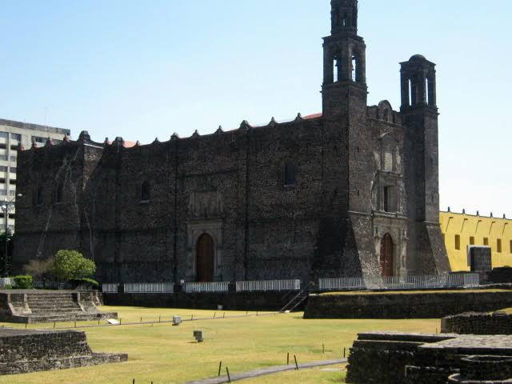
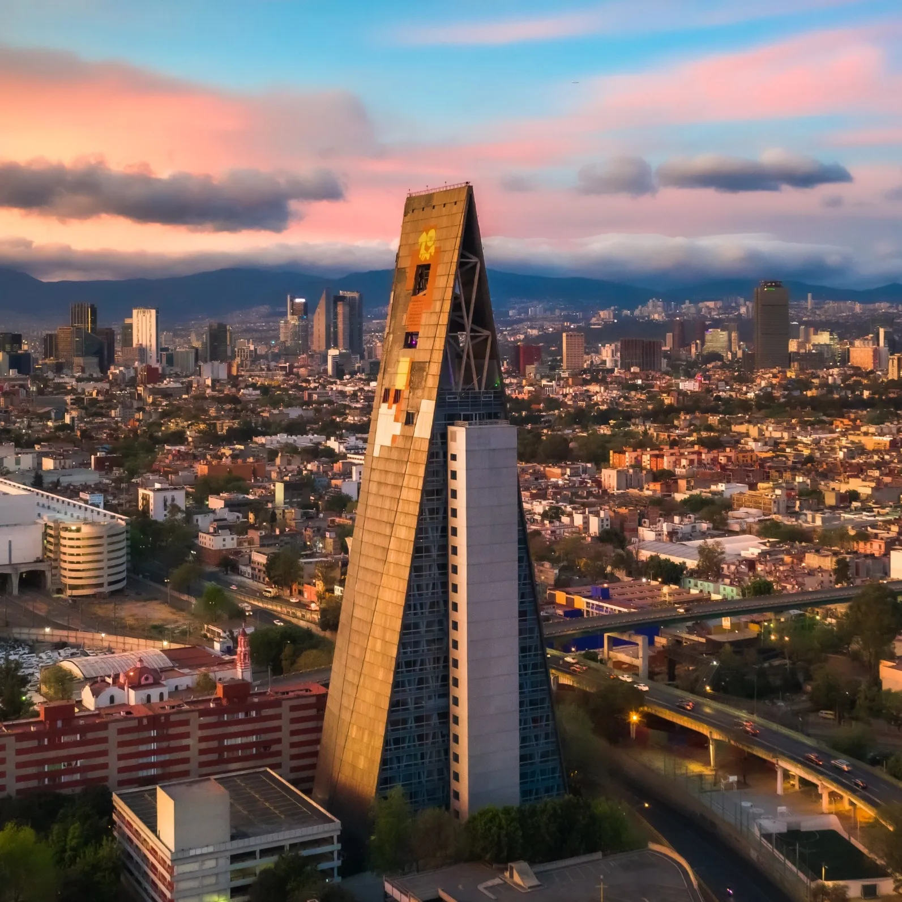

Tlatelolco es un lugar que siempre me ha causando un fuerte sentimiento de curiosidad, un lugar lleno de historia, el cual ha sido sumamente importante en muchas etapas del pais. Me parece impresionante la manera tan natural en la que convive el Mexico colonial, el prehispanico y el moderno. En esta seccion hablare un poco acerca de esta zona y mis sentimientos hacia ella.

La epoca prehispanica, aquella que todos los Mexicanos conocemos por los libros de historia de la SEP. Siempre se nos mensiona la ultima civilizacion antes de la conquista de los españoles, los Mexicas, cuya ciudad mas importante fue Mexico Tenochtitlan. Tlatelolco, por su parte fue una de las ciudades más importantes del México prehispánico, sumamente cercana a Tenochtitlan y a Azcapotzalco, Tlatelolco fue la sede del mercado más grande de Mesoamérica, en el cual se movia gran parte de la actividad economica de la civilizacion.

La segunda de tres partes de esta historia, la colonia. El templo de Santiago, fue construido sobre las ruinas de la civilizacion Mexica (Es curiosa esta tendencia de los españoles de construir sus templos sobre los de las civilizaciones que conquistaban). Dicha edificiacion data de cerca de 1521, lo que quiere decir que fue de los primeros templos catolicos constuidos despues de la caida de la gran Tenochtitlan.

Por ultimo, el Tlatelolco moderno, probablemente mi parte favorita de este lugar. Bajo la direccion del arquitecto Mario Pani se realizo la edificacion de conjunto habitacional Nonoalco Tlatelolco, su nombre oficial. Este se concibio bajo una estetica arquitectonica puramente modernista, siguiendo los ideales de Le Corbusier y la Bauhaus. Lo que me agrada de esta parte es el hecho de que el conjunto habitacional tuvo como centro de desarrollo al individuo, garantizando no solo la vivienda, sino tambien derechos basicos como salud, la cultura y el esparcimiento, contando con hospitales, parques, centros culturales, cines y transporte, todo esto sin tener que salir del conjunto habitacional.
Este video complementa lo que hemos visto hasta ahora, mostrando...